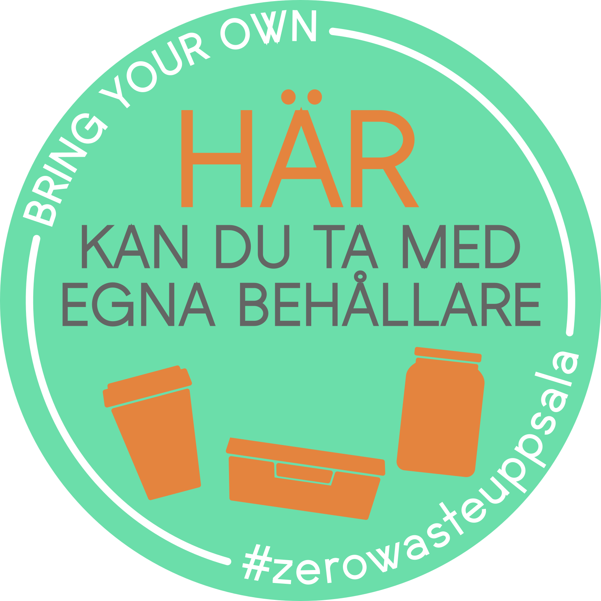

The project
This map was set up by Zero Waste Uppsala in partnership with Zero Waste Stockholm to help people consuming differently, using less packaging. The map identifies shops and restaurans that propose bulk products and accept customer containers. In Uppsala, those shops can easily be identified by the presence of this stocker on their door:

If you know a shop that accepts containers and that is not in the map let us know by filling the form.
Current contributors to the mapping of shops are:
- The OpenStreetMap contributors
- You, via this form
- Zero Waste Uppsala
- Zero Waste Stockholm for the Stockholm area
Contribute
How it works
Le site CartoVrac est un outil qui permet de visualiser des données extraites d’un Open Data appelé OpenStreetMap (cartographie libre sur le monde entier - https://openstreetmap.org).
Afin de référencer de nouveaux commerces sur CartoVrac, nous les ajoutons sur OpenStreetMap en précisant que le magasin effectue de la vente en vrac. Nous filtrons ensuite les données d'OpenStreetMap afin d'afficher sur CartoVrac uniquement les magasins proposant de la vente en vrac.
Pour en savoir davantage sur le projet ou participer à son développement, rendez-vous sur notre page GitHub. Tout le code source du projet s'y trouve sous licence libre ainsi qu'un Wiki détaillant le fonctionnement technique du projet.
Fill the form and we will add the shop
Add a shop by yourself
Pour ajouter un commerce sur la carte CartoVrac, il faut le renseigner sur OpenStreetMap. Pour cela :
- Login on OpenStreetMap (you have to create an account but it is free and quick).
- Search to shop on OpenStreetMap to know if it is referenced.
-
- If the shop exists click on "Edit" (upper lieft of the page) to modify the information related to it.
- If not : follow the tutorial about adding a new address on OpenStreetMap.
- In order to add the shop to the map make sure to add the tag bulk_purchase with the value only if the shop proposes only bulk products or yes if there are bulk products on the shop but it is not it main activity.
- Save our modifications.
We update the map four times a day so your modification should appear few hours later.
Thank you CartoVrac!
Cartovrac is a French team that developed this mapping tool and made it available for free. A big thank you to them for sharing and helping us out in setting up the Swedish map.
To follow or contribute to the development of the project, head to Github.